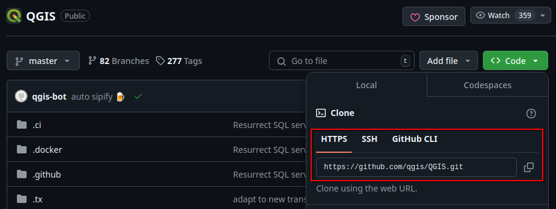
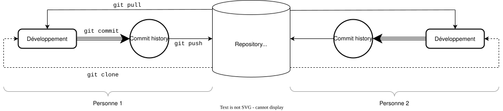
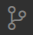
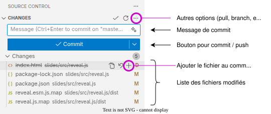

git
Logiciel de versionning

Git est un outil de versioning, il permet de résoudre 3 problèmes de gestion de code :
Git est un logiciel open source, disponible sur tous les systèmes
Git stocke ses données dans le répertoire de votre projet, dans le dossier .git, de manière indépendante pour chaque projet.
Git se contrôle par ligne de commande, le contenu de .git n'est jamais modifié manuellement.
La notion fondamentale dans git est le commit.
Il s'agit d'un instantané de votre projet, un "point de sauvegarde" qui enregistre son état.
Git permet de revenir, de comparer, de mélanger différents commits.
Ce qui se passe entre les commits n'est pas sauvegardé.
Git enregistre l'ordre des commits, qui sont liés les uns aux autres.
Dans un projet, pour indiquer à git qu'un fichier doit être tracké (pris en compte), la commande est :
git add ./chemin/vers/le/fichier.txt
Pour faire un commit, la commande est :
git commit -am "Message"
Git créé alors un nouveau commit
Pour contribuer à un projet existant, on récupère le code sur un dépôt distant (repository en anglais). On dit que l'on clone un dépôt disant vers un dépôt local.
Cette étape ne se fait qu'une seule fois.
Depuis ce dépôt local, on fera des modifications sur le code, avec les commits associés.
La commande pour cloner est
git clone https://www.site.com/url/du/depot/disant
Sur GitHub, l'URL se trouve ici, en cliquant sur le bouton "Code"

Pour synchroniser nos changements avec le dépôt distant, on fera un push. Git va alors mettre à jour le dépôt distant avec nos nouvelles modifications.
git push
Si de nouvelles modifications ont été ajoutées par d'autres personnes dans le dépôt distant, on pourra les récupérer à l'aide de la commande pull.
git pull
Les commandes principales
git clone <url> : récupère le code depuis un dépôt distantgit add <file> : ajoute un fichier au prochain commitgit commit -m "<message>" : créé un commit avec son message associégit push : envoie vos nouveaux commits dans le dépôt disantgit pull : récupère les nouveaux commits depuis le dépôt disantLa commande git commit -am "<message>" permet de créer un commit avec tous les fichiers modifiés, elle est équivalente à git add tous vos fichiers, puis faire un commit.
La commande git status affiche l'état actuel de votre projet (fichiers modifiés, ajoutés au prochain commit, etc)

Supposons :
Que se passe-t-il chez Alice ?
Supposons :
Que se passe-t-il chez Alice ?
! [rejected] main -> main (fetch first)
error: failed to push some refs to 'https://github.com/...'
Alice ne peut pas push, car elle ne possède pas la dernière version du code
La solution : Alice doit d'abord faire un git pull pour récupérer la dernière version du code.
A ce moment, git va mélanger (merge) les deux versions du code, celle d'Alice et celle de Bob.
Deux cas peuvent se produire :
Cas 1 :
Les modifications ne sont pas contradictoires, git parvient à faire automatiquement le merge
git commit et un git push pour push sa nouvelle version.
Cas 2 : Il y a conflit !
Lors du pull Alice recevra le message :
Auto-merging style.css
CONFLICT (content): Merge conflict in style.css
Automatic merge failed; fix conflicts and then commit the result.
Les conflits sont indiqués sous la forme :
<<<<<<< HEAD
div{ color:blue; }
=======
div{ color: green; }
>>>>>>> b6eeeaef7d4c17e8b7ad2b90968e2d17720ba319
Alice devra alors résoudre les conflits manuellement, puis git commit et git push
GitHub est une plateforme en ligne qui permet d'héberger du code. Elle fournit un stockage pour des dépôts git.
Il existe d'autres alternatives, par exemple GitLab (hébergement de code en ligne), ou GitTea (hébergement à faire sois-même, self-hosted).
Les dépôts en ligne fournissent également plein de services complémentaires.
Visual Studio Code détecte automatiquement les changements dans un dépôt local.
Ils sont affichés dans le menu


Si aucun fichier n'est ajouté au commit, VS Code proposera d'ajouter tous les fichiers modifiés.
Pour exclure totalement un fichier, un ensemble de fichiers, ou un répertoire d'un projet git, cela se fait grâce à un fichier spécial : le .gitignore
# contenu de .gitignore
.env # Ignore le fichier ".env"
*.pyc # Ignore tous les fichiers d'extension .pyc
dossier/a/exclure/ # Ignore le dossier dossier/a/exclure/ et tout son contenu
Cela est particulièrement utile pour exclure les fichier d'environnement et les fichiers temporaires générés par des compilateurs et autres outils de travail.
Les fichiers ignorés seront ignorés par la commande git add et ne seront pas affichés dans git status. Git se comportera comme s'ils n'existaient pas.
Site officiel : https://git-scm.com/
Livre officiel, gratuit : https://git-scm.com/book/en/v2
Tutoriel simple, pas à pas, partant de zéro : https://www.w3schools.com/git/default.asp
Et aussi un très grand nombre d'autres ressources en ligne, textes, vidéos, slides, etc